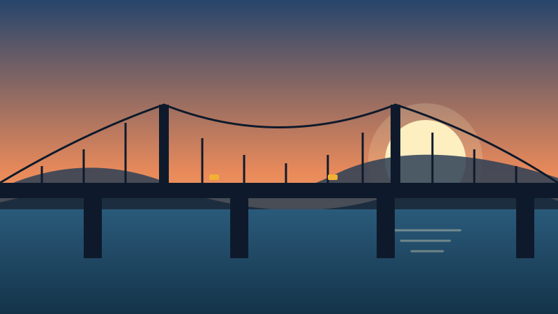

Ponte nova liga os dois lados de Vila Nova

O contexto
Durante mais de trinta anos, quem morava na margem leste de Vila Nova precisava dar uma volta de 12 quilômetros para chegar ao centro. Neste sábado, o relatório da prefeitura anuncia a abertura da nova ponte sobre o Rio Pardinho, que reduz o trajeto para menos de dois minutos.
As obras
A obra começou em 2023 e passou por três etapas: fundações, estrutura e pavimentação. A ponte tem 480 metros de extensão, duas faixas de rolamento e uma ciclovia.
- 2023: início das obras e das fundações
- 2024: pilares erguidos dentro do rio
- 2025: montagem das vigas e do tabuleiro
- 2026: pavimentação e inauguração
O impacto
Comerciantes da margem leste esperam aumento no movimento. Moradores contam que o ônibus escolar vai economizar quase uma hora por dia.
- 480 metros de extensão
- 2 faixas de rolamento e 1 ciclovia
- 12 quilômetros a menos no trajeto
Próximos passos
A prefeitura promete iluminar a ciclovia até dezembro e abrir uma consulta pública sobre o nome da ponte. Sugestões podem ser enviadas pela a página de contato.